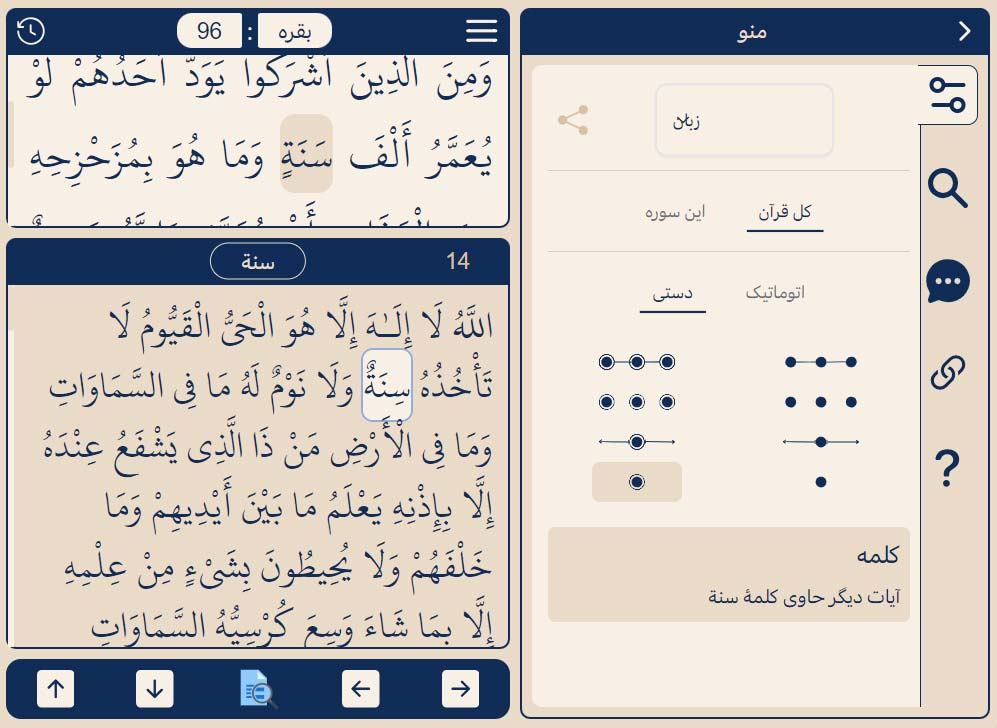

قرآن
قرآن به این شکلی که دست من و شماست یهویی به پیامبر نازل نشده (که مثلا تو غار حراء خدا قرآن رو داده باشه دست محمد بگه: اقْرَأْ، بخون!)

مطالب مهمی که از تاریخچه قرآن گفته شده، ایناست:
- محمد 40 ساله بود که تو غار حراء در شب قدر اولین آیۀ قرآن (اقْرَأْ..) رو به واسطۀ جبرئیل دریافت کرد (610 ب.م یعنی 610 سال بعد از میلاد عیسی)
- اینطور نبود که آیاتِ یه سوره کامل نازل بشه، بعد نوبت به سورۀ بعدی برسه. بسته به شرایط زمان و مکان و نیاز روز جامعه، قرآن آیه به آیه نازل میشد. تا بالاخره کل 6236 آیۀ قرآن طی 23 سال، تا زمان فوت پیامبر تکمیل شد (سال 632 ب.م)
- آیات قرآن توسط یاران محمد (مشابه با حواریون عیسی) ثبت و ضبط میشد، یعنی تعداد زیادی از نزدیکان محمد حافظ قرآن بودن
-
حدود 20 سال بعد از فوت پیامبر،
به پیشنهاد عُمَر و به دستور ابوبکر،
چینش قرآن به شکل امروزی انجام
شد (که سوره اول حمد باشه، دوم بقره، ... و کدوم 7 آیه تو سورۀ
حمد باشه، کدوم 286 آیه تو سورۀ بقره، الی آخر)

- متن اصلی قرآن، هیچ نقطه یا اِعرابی نداره. از قدیمی ترین قرآن هایی که پیدا شده، مصحف صنعاء (Sana'a palimpsest) و بِرمِنگهام (Birmingham) به خط حجازی و مصحف ملقب به دستخط خلیفه عُثمان به خط کوفی ه (Samarkand Kufic Quran)
- قرآن حدود 48 سال بعد از فوت محمد (690 ب.م) نقطه گذاری شد، و 96 سال بعد از نقطه گذاری (786 ب.م) اِعراب گذاری شد (فتحه، کسره، ضمه، ...)
-
متن اصلی قرآن که برای ما به
یادگار مونده، خام و بدون هیچ علامت اضافه، این شکلیه :

-
سوالات
-
1. آیا اینکه قرآن به دست خود محمد نوشته نشده، احتمال بروز خطا رو از 1400 سال پیش تا امروز بالا نمی بره؟ مثلا در چینش سوره ها، آیه ها، یا حداقل نقطه گذاری و اِعراب گذاری کلمات؟
-
2. آیا میدونین چهار انجیل اصلی عهد جدید (متی، مرقس، لوقا و یوحنا)، نه تنها به دست عیسی، که حتی به دست حواریون عیسی هم نوشته نشده؟ (لینک)
-
3. همونطور که خدا عیسی (مسیحیت) رو فرستاد تا زیاده روی قوم موسی (یهودیت) رو اصلاح کنه، آیا خدا محمد (اسلام) رو فرستاد تا زیاده روی قوم عیسی رو اصلاح کنه؟
-
4. اسلام و محمد و قرآن، دین و پیامبر و کتاب آخرن؟ چرا ما قوم محمد (مسلمونا) اگه زیاده روی کنیم، دیگه خدا پیامبر جدیدی نمی فرسته کج روی ما رو اصلاح کنه؟ خدا از دست ما آدما خسته شده، یا توقع داره دیگه بتونیم از پس خودمون بر بیایم؟
-
5. آیا اگه پیغمبری بعد محمد میومد به ما میگفت دین داریتون غلطه، چیزی نیست که خدا گفته؛ همونطور که محمد اومد به مسیحیا گفت دین داریتون غلطه، چیزی نیست که خدا گفته؛ همونطور که عیسی اومد به یهودیا گفت دین داریتون غلطه، چیزی نیست که خدا گفته؛ اونوقت آیا واقعا ما حاضر بودیم شریعت و دین پدری خودمون رو کنار بگذاریم، پیرو دین و پیغمبر جدید خدا بشیم؟ همون توقعی که الان مسلمونا از مسیحیا دارن، همون توقعی که قبلا مسیحیا از یهودیا داشتن.
-
6. آیا میدونین طبق انجیل، تنها کتاب دینی که خود خدا برای ما آدما نوشت، اولین دین رسمی ما آدما، همون ده فرمان در زمان موسی بود؟
And he gave unto Moses, when he had made an end of communing with him upon mount Sinai, two tables of testimony, tables of stone, written with the finger of God
و پس از پایان ارتباط با موسی در کوه سینا، دو لوح شهادت، تابلوهای سنگی که با انگشت خدا نوشته شده بود را به او داد انجیل Exo 31:18 -
7. آیا اگه ما آدما از همون اول به همون 10 فرمان دست نویس خدا عمل میکردیم، لزومی بود بعدها عیسی (مسیحیت) بیاد، انجیل (دست نویس حواریون) شریعت ما بشه؟ بعدش محمد (اسلام) بیاد، قرآن (وحی جبرائیل) شریعت ما بشه؟ یا همون اصول سادۀ خدا، دین اول و آخر میشد واسه ما؟ آیا خود همون ده فرمان هم، پیرو نافرمانی آدما صادر نشد؟ که اصلا از اول لزومی به دین و شریعت نبوده باشه، تا آخر؟
لَا إِكْرَاهَ فِي الدِّينِ قَدْ تَبَيَّنَ الرُّشْدُ مِنَ الْغَيِّ
نیست اکراهی در دین، همانا تبیین شد رُشد از تباهی 2:256
آیا اینکه ما معتقدیم قرآن تحریف نشده یعنی چی؟ یعنی حرفی نیست که این آیات و کلمات در قرآن های امروز، دقیقا همون هاییه که خدا به واسط جبرئیل در 1400 سال قبل بر محمد نازل کرد؟
إِنَّا نَحْنُ نَزَّلْنَا الذِّكْرَ وَإِنَّا لَهُ لَحَافِظُونَ
اگه متن خام و اصلی قرآن (بدون نقطه و اِعراب) در طول زمان ثابت مونده و برای ما حفظ شده، آیا ممکنه چینش آیات و سوره ها تغییر کرده باشه؟ حتی اونم نه، آیا حداقل ممکنه نقطه گذاری یا علامت گذاری بعضی کلمات قرآن بعدها اشتباه انجام شده باشه؟ (چه آگاهانه، چه نا آگاهانه)
به فرض اینکه اِعراب بعضی کلمات قرآنِ خدا، بعدها بدست انسان ها اشتباه گذاشته شده باشه؛ آیا این یعنی متن قرآن تحریف شده؟ یا یعنی متن خام و اصلی قرآن ثابت بوده و هست، ولی فهم و برداشت ما از بعضی کلمات قرآن اشتباه بوده و هست؟
مثال
آیت الکرسی یکی از مهمترین آیات قرآنه، چرا؟ چون خدا اونجا مستقیم خودش رو به ما معرفی میکنه. اما این وسط یه کلمه هست که عجیب به نظر میاد. فکر کن خدا باشی، بخوای خودت رو به بنده هات معرفی کنی. میگی منم الله، هیچ الهی جز من نیست، حیات و حرکتتون از منه، ضمنا بدونین که من چُرت نمیزنم؟! (خواب سَبُک ندارم).
اِعراب گذاری فعلی: کسره زیر س ( سِنه )
اللَّهُ لَا إِلَـٰهَ إِلَّا هُوَ الْحَيُّ الْقَيُّومُ لَا تَأْخُذُهُ سِنَةٌ وَلَا نَوْمٌ
اعراب گذاری دیگر: فتحه روی س ( سَنه )
اللَّهُ لَا إِلَـٰهَ إِلَّا هُوَ الْحَيُّ الْقَيُّومُ لَا تَأْخُذُهُ سَنَةٌ وَلَا نَوْمٌ
شاید اون گروه از اعراب که مسئول علامت گذاری آیات قرآن بودن، مثل ما ایرانیا در طول روز گاهی چُرت میزدن (سِنه) قبل از خواب (نوم)؟ درنتیجه چشمشون ناخواسته تا کلمۀ سنه رو (بدون علامت) قبل از کلمۀ نوم (خواب) تو این آیه دیده، یاد چُرت قبل از خواب (سِنه) افتادن، گفتن خدا که مثل ما شبا خواب نداره، قطعا روزا هم مثل ما چُرت نمیزنه؟
بجای خوندنش به معنای سال (سَنه)، چون طبیعتا بُعد زمان براشون معنای خاصی نداشته. چه بسا همۀ اعراب در اون زمان، همین برداشت رو از این کلمه در این آیه داشتن؟ همینطور که هنوز همۀ ما در این زمان، همین برداشت رو از این کلمه پیرو برداشت اونها داریم؟
وَمَا يَتَّبِعُ أَكْثَرُهُمْ إِلَّا ظَنًّا إِنَّ الظَّنَّ لَا يُغْنِي مِنَ الْحَقِّ شَيْئًا
إِذَا قِيلَ لَهُمُ اتَّبِعُوا مَا أَنْزَلَ اللَّهُ قَالُوا بَلْ نَتَّبِعُ مَا أَلْفَيْنَا عَلَيْهِ آبَاءَنَا أَوَلَوْ كَانَ آبَاؤُهُمْ لَا يَعْقِلُونَ شَيْئًا وَلَا يَهْتَدُونَ
-
تمرین تحقیق
-
1. کلمه سنه رو بصورت خام در قرآن جستجو کنید، بدون هیچ علامتی، به همون شکل اصلی که نازل شده.
اولین آیه در قرآن که شامل سنه هست، اینه:
وَمِنَ الَّذِينَ أَشْرَكُوا يَوَدُّ أَحَدُهُمْ لَوْ يُعَمَّرُ أَلْفَ سَنَةٍ
و از آنانکه شرک ورزیدند، دوست دارد هر یکیشان کاش عمر کند هزار سال 2:96دومین آیت الکرسی.
سومینش هم اینه:
قَالَ فَإِنَّهَا مُحَرَّمَةٌ عَلَيْهِمْ أَرْبَعِينَ سَنَةً
گفت: پس همانا آن حرامی بر شماست چهل سال 5:26پس آیۀ قبلی و بعدی آیت الکرسی، که در اون آیات هم این کلمه به همین رسم الخط اومده، در هر دو سنه به معنای سال علامت گذاری شده.
-
2. همۀ نتایج جستجو رو بررسی کنین، ببینین دیگه چه آیه ای تو قرآن هست که سنه در اون آیه به معنای چُرت زدن باشه؟ (جواب: هیچ آیه ای، فقط آیت الکرسی!)
-
3. تفکر کنین آیا خدا برای معرفی خودش، قبل از هر چیز دیگه، جالب نیست به بُعد زمان (سال) اشاره کنه؟ بگه من وجودی خارج از ظرف زمان هستم، سن و سال بر من نمیگذره (سنه)؛ خارج از زمان شما هستم، ولی غائب از مکان شما نیستم (نوم، در خواب غفلت)
این منطقی تره، یا اینکه بگیم خدا گفته من چُرت نمیزنم مثل شما آدما؟
-
4. میدونین اگه از یه عرب زبان بخواین این دو بخش از آیه رو خیلی تند و سریع روخوانی کنه، شباهت گویش سِنَةٌ و سَنَةٌ وسط جمله انقدر زیاد میشه که تقریبا قابل تفکیک از هم نیستن؟
لَا تَأْخُذُهُ سِنَةٌ وَلَا نَوْمٌ
لَا تَأْخُذُهُ سَنَةٌ وَلَا نَوْمٌ
حافظان قرآن هم به همین شکل آیات رو بخش به بخش در طول زمان حفظ کرده بودن، بعدها حفظیات خودشون رو تند و سریع برای کاتبان وحی بازخوانی میکردن، که مکتوب بشه و چیزی از قلم نیافته.
-
5. آیا اینکه عملا اِعراب گذاری برخی کلمات، به برداشت برخی اَعراب از مفاهیم برخی آیات بستگی داشته، یعنی قرآن تحریف شده؟ یا متن خام و خالص قرآن همواره ثابت بوده و هست، اما فهم و برداشت ما از قرآنه که همواره متغیر بوده و هست؟
به زبان کامپیوتر، این قرآن مثل یه نرم افزاره که از یه دیتابیس مادر دانلود شده (اُمُّ الکتاب)، نصب شده واسه زمینیا (نزول). به مرور زمان، طی 23 سال اجرا، پیرو فیدبکی که مدیر تولید (خدا) و برنامه نویسا (ملائک) از کاربرا (مردم) گرفتن، یه سری وحی ها حذف (مَحو) و سایر اونها حفظ (تثبیت) شده، تا نهایتا ورژن آخر (قرآن) تحویل بشه.
يَمْحُو اللَّهُ مَا يَشَاءُ وَيُثْبِتُ وَعِنْدَهُ أُمُّ الْكِتَابِ
پس مطالب دیگه ای هم بوده که خدا به محمد طی اون سالها وحی کرده (از دیتابیس مادر)، اما بعد گفته اینا نیاز نیست ثبت بشه تو نسخۀ دست بشر (قرآن)؟
یه مثال ساده، که سر نخش تو قرآن هست، ولی منشاء و حکمت بودنش معلوم نیست: حروف مقطعه
الم- الم- المص- الر- الر- الر- المر- الر- الر- کهیعص- طه- طسم- طس- طسم- الم- الم- الم- الم- یس- ص- حم- حم- حم عسق- حم- حم- حم- حم- ق- ن
بیشتر مفسرین میگن اینا رمز بین خدا و پیامبر بوده. این یعنی خدا توضیح حروف مقطعه رو به خود محمد گفته (وحی)، ولی بعدش اعلام کرده این توضیحات بین خودم و خودت بمونه؟ صلاح نیست ثبت بشه، بهتره محو بشه؟
بعضیا هم میگن محمد خودش اینا رو اول سوره ها نوشته، که بعد یادش بمونه چه سوره هایی مفاهیم مشترک داره، که نهایتا به هم وصل بشه. خب در اینصورت که یه جاهایی از قرآن کلام محمد شده (حروف مقطعه) بجای کلام الله (آیات)؟ اصلا اگه اینا یادداشت شخصی محمد واسه ربط سوره ها بوده، یا رمز بین خودش و خدا، چرا تو قرآن واسه عموم ما باقی مونده؟ چرا بعدها از اصل قرآن حذف (محو) نشده؟
آیا خدا میخواسته بعدها ما آدما با هوش طبیعی یا مصنوعی، رمز گشاییش کنیم؟ یا مصداق همون درختی هست که خدا به آدم گفت این اینجا هست، ولی طرفش نرو! آدم هم که طبعا مثل همۀ ما نوادگانش کنجکاو (لجباز؟)، همه درختا رو ول کرد، صاف رفت طرف همون یکی! (کُلّ ممنوع، مرغوب)
وَقُلْنَا يَا آدَمُ اسْكُنْ أَنْتَ وَزَوْجُكَ الْجَنَّةَ وَكُلَا مِنْهَا رَغَدًا حَيْثُ شِئْتُمَا وَلَا تَقْرَبَا هَـٰذِهِ الشَّجَرَةَ فَتَكُونَا مِنَ الظَّالِمِينَ
با این مقدمه، خیلیا از زمان محمد تا امروز تلاش کردن که نزدیک بشن به این شجره تو قرآن (حروف مقطعه؟). اما آیا خدا برامون تست هوش گذاشته تو کتابش؟ تشویق کرده ریاضی دانها رمزگشایی کنن سیستم کدینگ قرآن رو؟ یا نفس خودمون هست که میخواد سر در بیاره؟ آیا حروف مقطعه مثل همون شجرۀ زمان آدم نیست، که بریم طرفش بجای نزدیک تر شدن به خدا، ازش دور میشیم؟ این کشفیات برای خودمون و دیگران عامل خیر میشه، یا شرّ؟
وَمَا جَعَلْنَا الرُّؤْيَا الَّتِي أَرَيْنَاكَ إِلَّا فِتْنَةً لِلنَّاسِ وَالشَّجَرَةَ الْمَلْعُونَةَ فِي الْقُرْآنِ وَنُخَوِّفُهُمْ فَمَا يَزِيدُهُمْ إِلَّا طُغْيَانًا كَبِيرًا
رشاد خلیفه (لینک) یکی از اون کسانی بود که تلاش کرد به این شجره نزدیک بشه، و موفق شد روابط ریاضی عدد 19 رو پیرو این آیه در قرآن کشف کنه:
لَوَّاحَةٌ لِلْبَشَرِ؛ عَلَيْهَا تِسْعَةَ عَشَرَ
ولی به همون میزان قانع نشد، طمع کرد خدا زیادتر براش از پشت پردۀ کدینگ قرآن بگه!
ثُمَّ يَطْمَعُ أَنْ أَزِيدَ
اونوقت هی فکر کرد، هی محاسبه کرد...
إِنَّهُ فَكَّرَ وَقَدَّرَ
آیه بعدی، آیۀ 19 (عدد رشاد!؟) میگه کشته باد (و کشته شد!) بخاطر کیفیت بد محاسباتش.
فَقُتِلَ كَيْفَ قَدَّرَ
آیات 21 تا 25 میگه اول این کدینگ قرآن (19) رو نظاره کرد، بعد دید نمیخونه با محاسبات خودش؛ عبوس شد و اخم کرد، به قرآن پشت کرد و تکبّر کرد (قرآن غلطه یا محاسبات من؟ قرآن!)؛ گفت انگار یه سحری تو این کتابه که باعث میشه رو آدما اثر کنه، اصلا این (دو آیۀ آخر توبه، در محاسبات رشاد) قول بشره! حرف آدماست، نه کلام خدا.
خلاصه به جایی رسید که دیگه نه میتونست رو حرفش باقی بمونه، نه محاسبات عددی 19 رو رها کنه (سَقَر):
وَمَا أَدْرَاكَ مَا سَقَرُ؛ لَا تُبْقِي وَلَا تَذَرُ
اینجاست که آیه بعدی همونه که رشاد کل محاسباتش رو بر مبنای اون بنا کرد: (قرآن) لوح هاییست برای بشر، بر آنست نوزده
و جالبه آیۀ بعدش، به وضوح قید میکنه آخر و عاقبت این راه به کجا ختم میشه:
وَمَا جَعَلْنَا أَصْحَابَ النَّارِ إِلَّا مَلَائِكَةً وَمَا جَعَلْنَا عِدَّتَهُمْ إِلَّا فِتْنَةً لِلَّذِينَ كَفَرُوا
فراموش نکنیم رشاد خلیفه، طبیعتا نفر اول نبود، نفر آخر هم نخواهد بود. خیلی از آمار عددی و محاسبات رشاد خلیفه بعدها ثابت شد که اشتباه بوده. آیا خودش هم میدونسته؟ آیا یه جاهایی عدد سازی کرده، که با فرمولهای 19 برای پیروانش بخونه؟ فرو رفتن رشاد در روابط عددی 19 قرآن، تا اونجا پیش رفت که به پیروانش گفت من رسول خدا هستم، اسمم در قرآن کُد شده؛ رسالت دارم این 2 آیۀ جعلی رو از قرآن حذف کنم.
کاری نداریم رشاد رسول خدا بود یا رسول خود، اما حاصل کشف عدد 19 برای خودش و ما، چی شد؟ بعضیا وقتی اشتباه محاسبات ریاضی رشاد رو بعدها فهمیدن، به اصل قرآن و کلام الله بودنش شک کردن. بعضی ها پیروان این رسول باقی موندن، که تا همین امروز در سراسر دنیا قرآن هایی چاپ میکنن که دو آیۀ اعلامی رشاد در اونها پیرو محاسباتش، حذف شده.
آین این رسولان به خواست خدا مانع تحریف قرآن شدن، یا به خواست خود عامل تحریف قرآن؟ آیا خدا در آسمون لحظه شماری میکنه که بالاخره ما آدما یه روز در زمین راز کتابش رو کشف کنیم؟
این همه اپلیکیشن رو گوشی و کامپیوتر شماست، آیا برنامه نویسها لحظه شماری میکنن که بالاخره شمای کاربر یه روز راز کدنویسی اونها رو کشف کنید و رمزگشایی کنید؟ یا همه زحمات پشت پرده به این هدف انجام شده که خیلی ساده و راحت بتونین از حاصل اون کدنویسی ها در زندگی روزمره تون استفاده کنین؟
سهراب سپهریکار ما نیست شناسایی راز گل سرخ
کار ما شاید این است
که در افسون گل سرخ شناور باشیم
متن مربوط به آیتم سوم